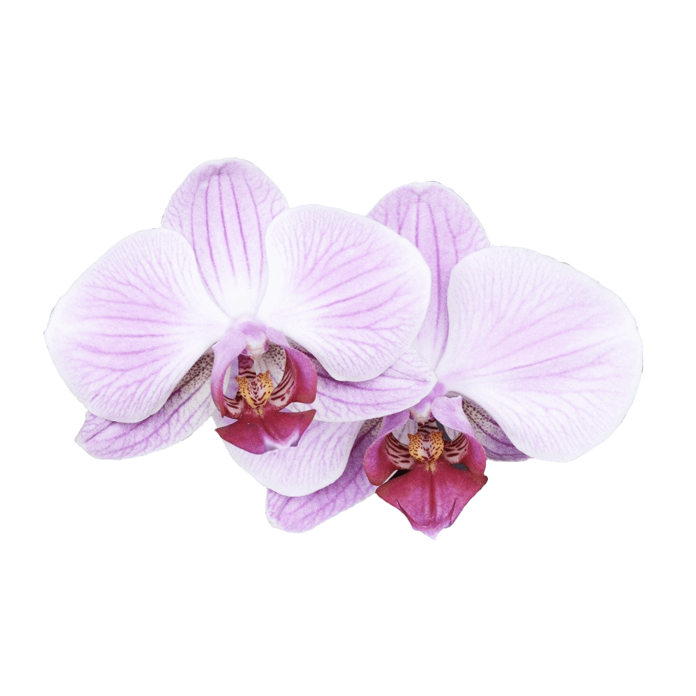

Old Standard reproduces a specific type of Modern (classicist) style of serif typefaces, very commonly used in various editions of the late 19th and early 20th century, but almost completely abandoned later.
The name “Old Standard” was selected as opposed to the “Obyknovennaya Novaya” typeface, widely used in Soviet typography, which represents another, slightly different type of the same Modern style.
Font available from Google Fonts.
Orchids are part of the biggest and oldest flower family. There are approximately 24 different types of Orchid flowers expanding over to 20,000 different species. The sense of mystique seems to set them apart from most of the other flowers. Orchids are as elegant as they come and the perfection of its characteristics are unreal.
The most highly coveted of ornamental plants, the delicate, exotic and graceful Orchid represents love, luxury, beauty and strength. In ancient Greece, Orchids were associated with virility.
During the Victorian era, Orchid symbolism shifted to luxury, and today this sense of magnificence and artful splendour continues, with Orchids representing rare and delicate beauty. The 14th wedding anniversary flower, pink orchids convey pure affection, and the popular Cattelya Orchid represents mature charm.